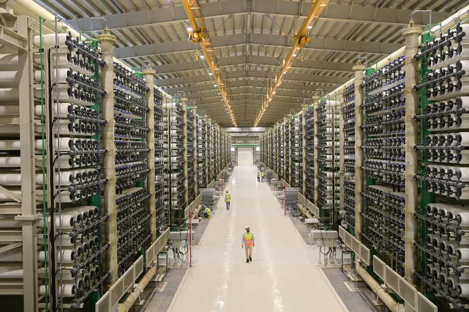
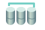
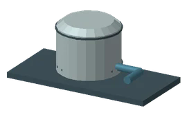
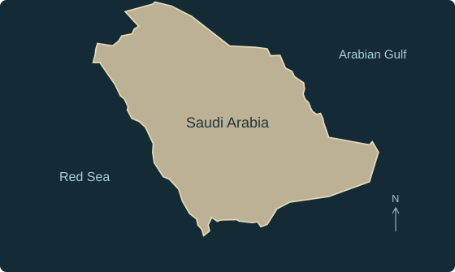
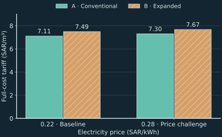

SHARAKAT · AUGUST–NOVEMBER 2026
SHARAKAH
Graduate Development Program
I tested how electricity prices affect the tariff for two desalination options in the winning Al-Sahil PPP case.

Yanbu 4 · RO membrane hall
Pretreatment SWROConditioning
SWROConditioning
StorageCity pipeline
Seawater reverse osmosis
Pressurized seawater passes through a membrane bank. The permeate goes to conditioning, storage and delivery to the off-taker. The concentrate carries the rejected salt.
Explore the Saudi setting & streams

High-pressure PX equipment reference
The Saudi Water Academy supply-chain reference connects production, transmission, storage and distribution. The Al-Sahil case focuses on production and delivery to the off-taker.
Saudi Arabia provides the geographic reference. The scene illustrates a coastal concept and represents no specific site.
Yanbu 4’s reverse osmosis membrane hall is an engineering reference for the Al-Sahil case study. Photograph by SHARAKAT .
Choose a desalination option for a simulated PPP.
Excel electricity-price sensitivity on water tariffs.
Recommended A · won the hackathon.
INTERACTIVE PROCESS MAP
From seawater to the off-taker.
Select equipment to see its role.
The feed enters the treatment chain. Select a piece of equipment to explore its role and the decision it informs.
3.20kWh/m³ · electricity intensity
7.30SAR/m³ · at SAR 0.28/kWh
Full capacity from the start; lower modeled full-cost tariff than fully expanded B.
Diagram scope & assumptions
Illustrative SWRO process map, not a plant P&ID. A and B share this treatment chain; their configuration and economics differ. The team also evaluated a thermal hybrid. Expanded B represents a full year after expansion acceptance.
Program journey & project notes
THE LEARNING JOURNEY
Seeing the whole project.
I studied how technical feasibility, project finance, procurement, payment mechanisms, and risk allocation shaped decisions for the organization buying the water. Excel supported scenario modeling; Power BI training supported clear reporting.
AL-SAHIL / SIMULATED PPP CASE
A decision with trade-offs.
Our team compared conventional seawater reverse osmosis, modular SWRO, and a thermal hybrid. I modeled the impact of electricity prices on water tariffs in Excel. Our multidisciplinary team evaluated the options, recommended Option A, and won the hackathon.
Option A offered full capacity from the start and remained cheaper than fully expanded Option B in the modeled comparison. Option B used less electricity per cubic metre.
Technical context: DuPont FilmTec technical manual . Case data and final decision: AlSahil 4.0, E2 Energy Challenge; final deck slides 8, 26 and 28.
AL-SAHIL · ENERGY MIX
What powers a cubic metre?
INTERACTIVE CASE EXPLORER
What happens when electricity costs change?
Change electricity prices and the payment deadband. Full-cost tariffs show the cost impact; indexed-payment tariffs show the modeled adjustment after the deadband.
How electricity prices affected the modeled water tariff
Model assumptions & verified data
Source-model energy intensity: A 3.20 and expanded B 3.05 kWh/m³. Non-electricity costs, output, and all other assumptions stay fixed. Full-cost tariff = baseline tariff + energy intensity × (electricity price − 0.22). Baseline tariffs are 7.1072876712 and 7.4907421434 SAR/m³.
Indexed payment applies only to the price change beyond the selected percentage of the baseline electricity price. This is a simplified sensitivity of the case payment rule, not a new procurement recommendation. Expanded B represents a full year after expansion acceptance.
| Electricity (SAR/kWh) | A | Expanded B |
|---|---|---|
| 0.22 | 7.11 | 7.49 |
| 0.28 | 7.30 | 7.67 |
Sources: AlSahil 4.0.xlsx, E2 Energy Challenge; Al Sahil Unified Final.pptx, slide 8. Final team recommendation: slides 26 and 28.
View baseline figure

OPERATING ILLUSTRATION
Water delivered. Energy required.
Compare the case’s electricity intensities at a delivery rate you choose.
At 100,000 m³/day, B uses 15 MWh/day less electricity.
Daily electricity cost: A SAR 70,400 · B SAR 67,100.
Calculation basis
Electricity = delivery × case electricity intensity. Cost = electricity × price. Delivery is a visitor assumption, not a demand forecast. This illustration excludes all other costs and does not replace the full-cost tariff comparison above.